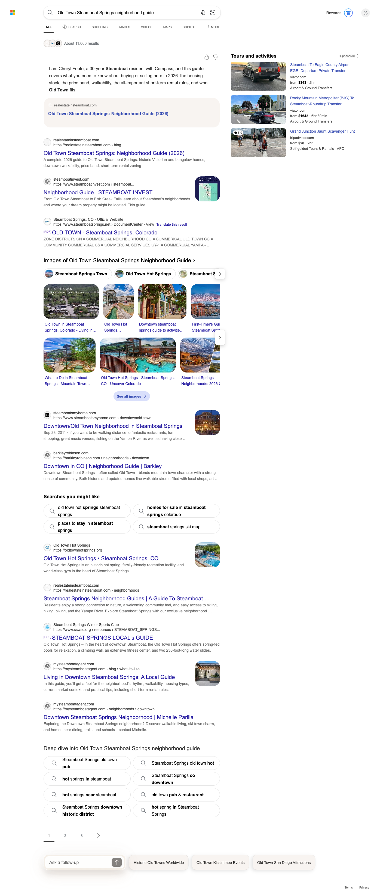
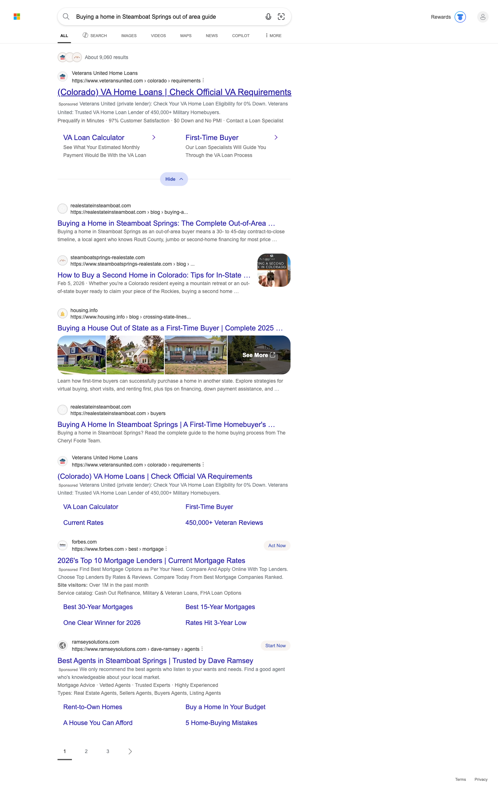
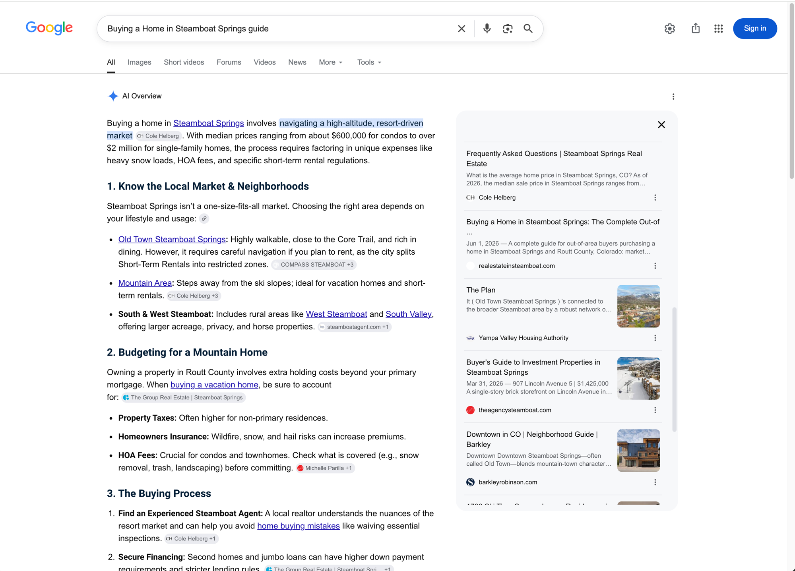
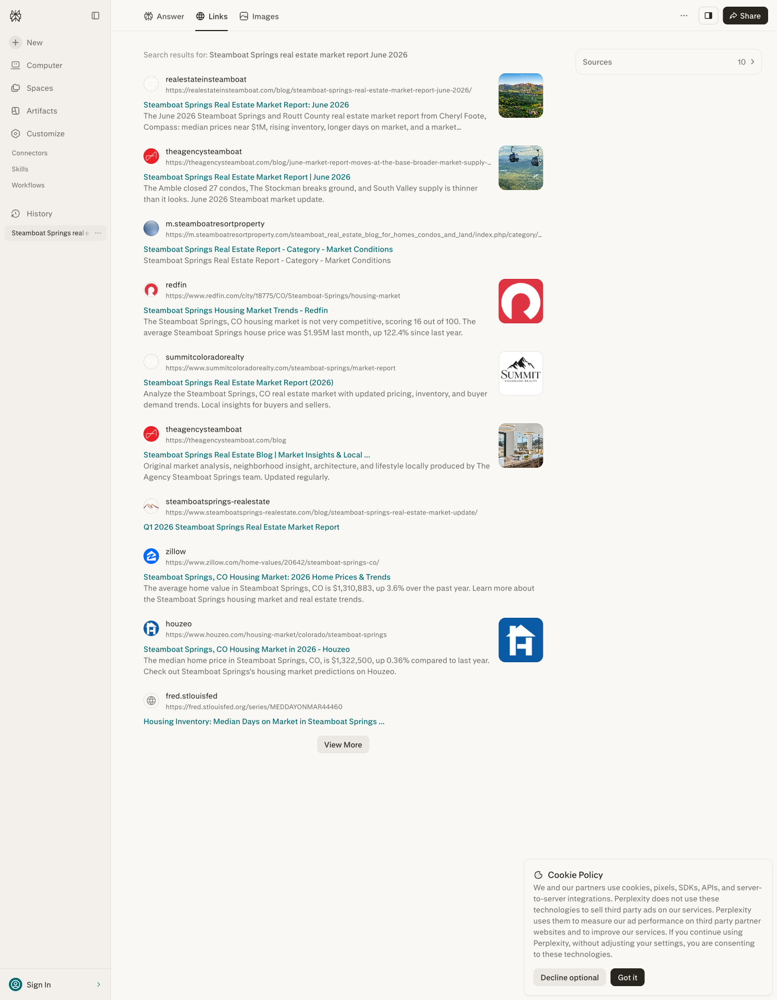
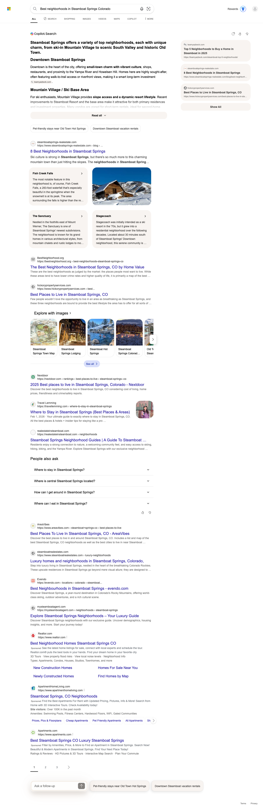
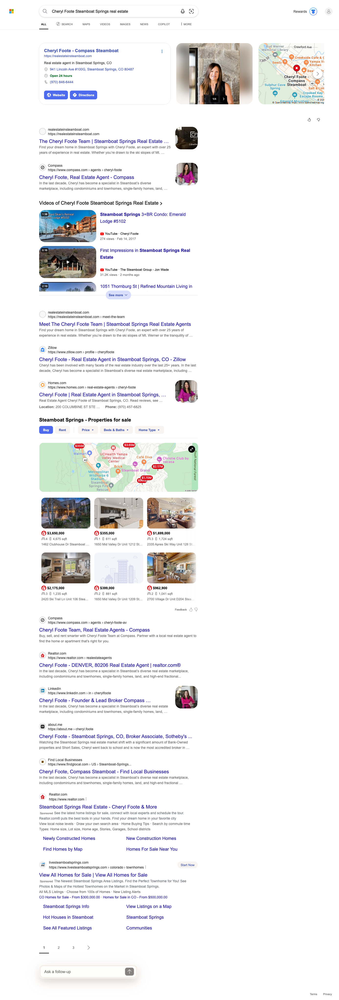

This is the first in a monthly series, and it sets the format you will see every month from here. The goal of Total Search is simple: make sure that when someone looks for Steamboat Springs real estate, your name and your website come up, whether they search the classic way or ask an AI assistant.
So every month this report measures two things side by side. First, classic search: how often your site shows up in Google and the clicks it earns, pulled directly from Google Search Console. Second, AI answer engines: whether Bing, Perplexity, ChatGPT, and Google's AI Overviews cite realestateinsteamboat.com when people ask them questions about buying, moving to, and living in Steamboat. The AI section is built as a fixed scoreboard of the same queries each month, so you can watch it move over time.
Because this is month one, treat every number here as your baseline, the starting line we measure future months against.
In June we published a seven-guide Steamboat Springs topic cluster on realestateinsteamboat.com, submitted every post for Google indexing, interlinked them, and shipped each with full structured data. This is the content foundation that AI answer engines and classic search both read from.
The early signal is strong. In our first machine check, run July 5 just days after the cluster went live, realestateinsteamboat.com is already cited on all four AI answer engines we can measure: Bing, Perplexity, ChatGPT, and Google's AI Overviews. That is 19 machine-confirmed citations across the four engines. AI engines usually take weeks to pick up new sources, so citations on all four this quickly is an early win, not the expected day-zero result. Per engine: Bing cites you on 4 of 12 queries, ChatGPT on 7 of 12, Perplexity on 7 of 12, and Google produced an AI Overview on only two queries this run and cited you on one of them (cost of living).
Classic search is already a real funnel underneath all of this: in June (June 1 to 30) your site earned 317 clicks from 24,556 impressions at an average Google position of 6.9, the strongest average position of any client in our Total Search book with Search Console connected.
Answer engines cite the source that gives the most complete, most current answer on a topic. So in June we built out a full cluster of seven long-form Steamboat Springs guides, each designed to be the definitive answer on its subject. All seven are published and verified live on realestateinsteamboat.com as of July 5, 2026.
Behind the scenes, all seven were manually submitted for indexing in Google Search Console (so they are in Google's crawl queue now rather than waiting to be discovered), interlinked as a topic cluster so readers and AI assistants can move across the whole set, and shipped with full schema and market-report-grade detail, which is what answer engines look for when they decide whose content to cite.
This is the scoreboard that will carry forward every month. We took twelve real buyer questions matched to your new guides plus your brand query, and checked each one across four AI answer engines on July 5, 2026: Bing, Perplexity, ChatGPT, and Google's AI Overviews. That is 48 tracked cells. Each cell shows whether our machine checks found realestateinsteamboat.com cited as a source.
Two honest notes on how to read it. First, Google's AI Overviews only appear for some searches; this run, Google generated an AI Overview for just two of the twelve queries. Where Google produced no AI answer at all, we mark the cell “no AI answer” and leave it out of the scoring rather than count it as a miss. Second, we use two instruments here: a structured screenshot probe for Bing, and our new daily citation checker for Perplexity, ChatGPT, and Google AI Overviews. The daily checker read all twelve Perplexity queries cleanly and is the source of record for the Perplexity column; the Bing/Perplexity screenshot captures serve as corroborating visual proof where they are legible.
| Buyer Query | Bing | Perplexity | ChatGPT | Google AIO |
|---|---|---|---|---|
| Steamboat Springs real estate market report June 2026 | – | ✓ | ✓ | ◦ |
| Steamboat Springs housing market 2026 | – | – | ✓ | ◦ |
| Buying a home in Steamboat Springs out of area guide | ✓ | ✓ | – | ◦ |
| Moving to Steamboat Springs Colorado guide | – | ✓ | – | ◦ |
| Steamboat Springs neighborhoods where to live | – | – | ✓ | ◦ |
| Best neighborhoods in Steamboat Springs Colorado | ✓ | – | – | ◦ |
| What is it like to live in Steamboat Springs Colorado | – | – | – | ◦ |
| Is Steamboat Springs a good place to live | – | – | – | – |
| Cost of living in Steamboat Springs CO | – | ✓ | ✓ | ✓ |
| Old Town Steamboat Springs neighborhood guide | ✓ | ✓ | ✓ | ◦ |
| Steamboat Springs short term rental rules investment property | – | ✓ | ✓ | ◦ |
| Cheryl Foote Steamboat Springs real estate (brand) | ✓ | ✓ | ✓ | ◦ |
Reading the scoreboard. Days after publishing, realestateinsteamboat.com is cited on all four AI surfaces we can measure, for a total of 19 machine-confirmed citations. Per engine: ChatGPT cites you on 7 of 12 queries, Perplexity on 7 of 12, Bing on 4 of 12, and Google's AI Overviews on 1 of the 2 queries where Google produced an AI Overview this run (the other ten searches returned no AI Overview, so they are not scored). The standout is Cost of Living in Steamboat Springs, CO, cited on all three of ChatGPT, Perplexity, and Google's AI Overview, the only guide to earn a Google AI Overview citation this run. The cells still marked “not yet” are the room to grow that next month will chase.
Here is the evidence behind the scoreboard. Two kinds sit side by side. The Bing citations and the Perplexity market-report citation are backed by legible screenshots from our capture probe, and two of them point at the specific June guide by name. The ChatGPT and Google AI Overview citations are confirmed by our daily citation checker, which detects the cited source programmatically; those do not have a screenshot this run and are labeled as such. We keep the two tiers distinct so you always know how each citation was verified.
This is the strongest single result in the run. Bing's Copilot answer opens by paraphrasing your guide directly (“I am Cheryl Foote, a 30-year Steamboat resident with Compass, and this guide covers what you need to know about buying or selling here in 2026…”), and the Old Town Steamboat Springs: Neighborhood Guide (2026) appears as the cited source in the highlighted box directly beneath the answer.

On Bing, your new guide, Buying a Home in Steamboat Springs: The Complete Out-of-Area Buyer's Guide, appears in the results by its own URL (realestateinsteamboat.com/blog/buying-a…). On Perplexity, both the capture probe and the daily checker independently detected realestateinsteamboat.com as a cited source for this query.

In a live Google session, the AI Overview for “Buying a home in Steamboat Springs guide” lists your Buying a Home in Steamboat Springs: The Complete Out-of-Area Buyer's Guide (realestateinsteamboat.com) in its source rail, by name and domain. This is a manual browser capture taken July 7, 2026.
One honest note on how it is counted. Our automated daily checker recorded no AI Overview for this query, so its cell in the scoreboard above stays “no AI answer.” Live, logged-in browser sessions sometimes render an AI Overview that the automated probe does not, which is exactly why we run both. We present this as screenshot-tier evidence and do not score it in the matrix.

The citation itself is machine-confirmed twice over: both the capture probe and our daily citation checker detected realestateinsteamboat.com as a Perplexity source for this query. In the screenshot below, your Steamboat Springs Real Estate Market Report: June 2026 guide appears first in Perplexity's retrieved results list visible in this capture, above Redfin, Zillow, and Houzeo. That ordering is what this single capture shows (screenshot-tier); the citation is the machine-confirmed fact.

On the best-neighborhoods query, realestateinsteamboat.com appears in Bing's organic results (the AI answer on this query is not yet citing the site, which makes it a clear next target). On your brand query, Bing shows a business panel for Cheryl Foote at Compass, and realestateinsteamboat.com appears as the panel's website, with your home page and Meet the Team pages visible near the top of the organic results in the capture (that ordering is what the single screenshot shows; the citation itself is what the probe confirms). Your brand query is also machine-confirmed cited on ChatGPT and Perplexity by the daily checker. We are careful about one thing: these citations draw on pages your site already had, so we credit them to your overall domain authority rather than to the new June guides specifically.


This is the standout of the run. Google produced an AI Overview for only two of the twelve queries this month, and on Cost of Living in Steamboat Springs, CO its AI Overview cited realestateinsteamboat.com. The same guide is also cited on ChatGPT and Perplexity, so this one query earns citations on three AI surfaces at once. All three are machine-confirmed by our daily citation checker, which detects the cited source programmatically. There is no screenshot for these this run; they are checker-confirmed, and we label them that way.
The AI scoreboard is the new frontier, but classic Google search is already sending real, measurable traffic to your site today. These numbers come straight from Google Search Console for calendar June, June 1 to 30, 2026. June is the first full month of Search Console measurement for realestateinsteamboat.com; the property began collecting data in June, so month-over-month comparisons begin with the July report.
An average position of 6.9 is the single best average position of any client in our Total Search book with Search Console connected. It means that across the searches where your site appears, you are landing near the top of page one on average, the zone where clicks actually happen. With 24,556 impressions in June, the audience is already there; the work from here is converting more of those impressions into clicks and, increasingly, into AI citations that put your name in front of buyers before they ever reach a results page.
June was about building the foundation. July is about watching the engines discover it and measuring the movement against this baseline. Here is what to expect and what we will be doing.
All seven guides were submitted for indexing in June and are only days into their life. AI engines typically take weeks to fully pick up new sources, so the queries sitting at “not yet” today are the ones most likely to flip to cited over the next month as the cluster is crawled and trusted.
The ChatGPT, Perplexity, and Google AI Overview numbers in this report came from the first run of our daily citation checker. From here it checks on a running basis, so next month we can show persistence, a citation that holds across many daily checks is a far stronger signal than any single result, and report movement query by query.
Next month's report repeats these exact twelve queries across all four engines, so you will see a clean before-and-after: which cells moved from “not yet” to cited, and whether Google begins generating an AI Overview (and citing you) on more than the two queries it answered this run.
The cost-of-living, Old Town, market-report, and out-of-area guides earned citations first, and cost of living reached Google's AI Overview. That tells us buyer-intent, cost, and market-data content is landing fastest here, and it guides which topics we prioritize in the next content drop.